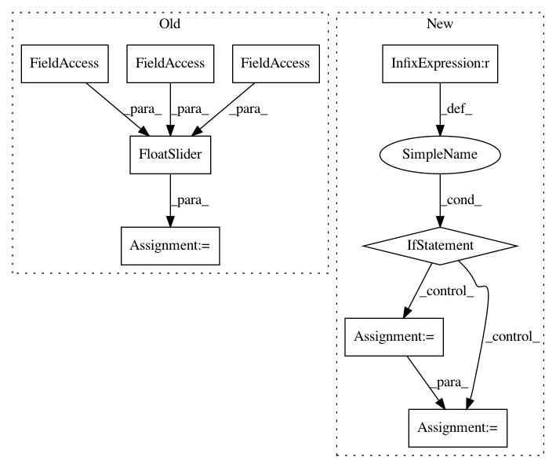

d0ae012f2a8ea703d1ba13a55de73f8eca8356ca,mathics/builtin/manipulate.py,Manipulations,_add_min_max_step_var,#Manipulations#Any#Any#Any#Any#Any#Any#,120
Before Change
self._add_widget(widget, i.get_name(), lambda x: Real(x), ilabel)
def _add_min_max_step_var(self, i, imin, imax, idefault, di, ilabel):
widget = FloatSlider(value=idefault.value, min=imin.value, max=imax.value, step=di.value)
self._add_widget(widget, i.get_name(), lambda x: Real(x), ilabel)
def _add_discrete_options_var(self, symbol, options, idefault, ilabel):
formatted_options = []
After Change
imin_value = imin.to_python()
imax_value = imax.to_python()
di_value = di.to_python()
if imin_value > imax_value or di_value <= 0 or di_value >= (imax_value - imin_value):
raise IllegalWidgetArguments(i)
else:
idefault_value = min(max(idefault.to_python(), imin_value), imax_value)
if all(isinstance(x, Integer) for x in [imin, imax, idefault, di]):
widget = IntSlider(value=idefault_value, min=imin_value, max=imax_value,
step=di_value)
else:
widget = FloatSlider(value=idefault_value, min=imin_value, max=imax_value,
step=di_value)
self._add_widget(widget, i.get_name(), lambda x: from_python(x), ilabel)
def _add_discrete_options_var(self, symbol, options, idefault, ilabel):
formatted_options = []
for i, option in enumerate(options.leaves):
data = self._evaluation.format_all_outputs(option)
In pattern: SUPERPATTERN
Frequency: 3
Non-data size: 9
Instances
Project Name: mathics/Mathics
Commit Name: d0ae012f2a8ea703d1ba13a55de73f8eca8356ca
Time: 2016-08-23
Author: Bernhard.Liebl@gmx.org
File Name: mathics/builtin/manipulate.py
Class Name: Manipulations
Method Name: _add_min_max_step_var
Project Name: hyperspy/hyperspy
Commit Name: 87537e094f01060c893099c7552db24e1fb1048a
Time: 2016-05-25
Author: to266@cam.ac.uk
File Name: hyperspy/component.py
Class Name: Parameter
Method Name: notebook_interaction
Project Name: mathics/Mathics
Commit Name: d0ae012f2a8ea703d1ba13a55de73f8eca8356ca
Time: 2016-08-23
Author: Bernhard.Liebl@gmx.org
File Name: mathics/builtin/manipulate.py
Class Name: Manipulations
Method Name: _add_min_max_var